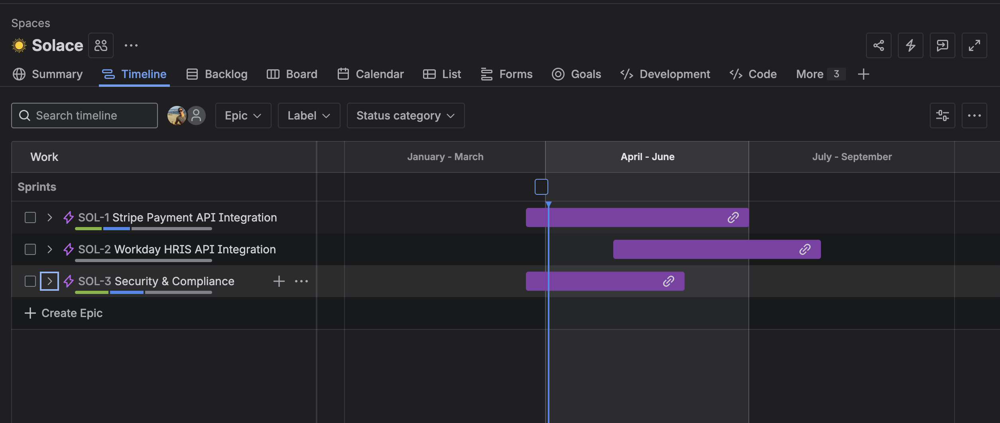
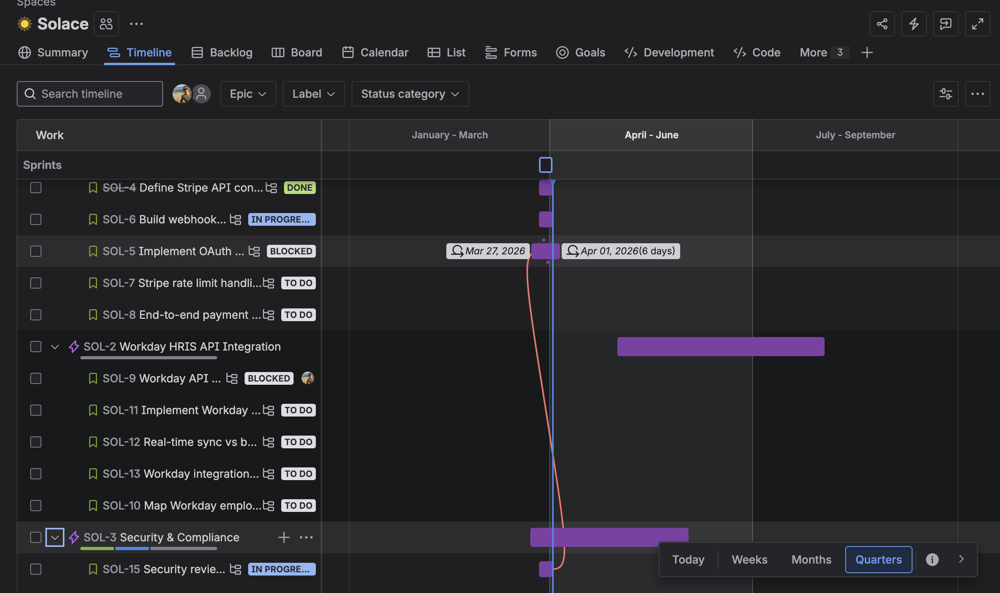
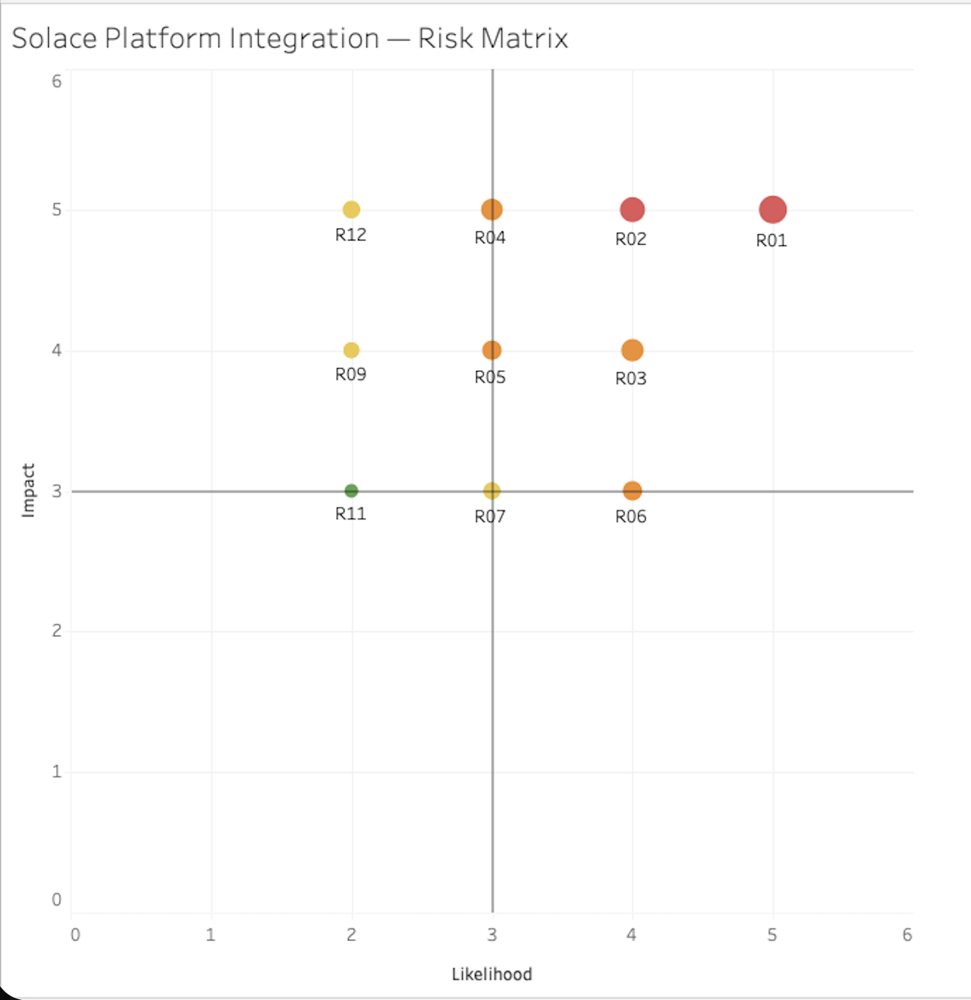
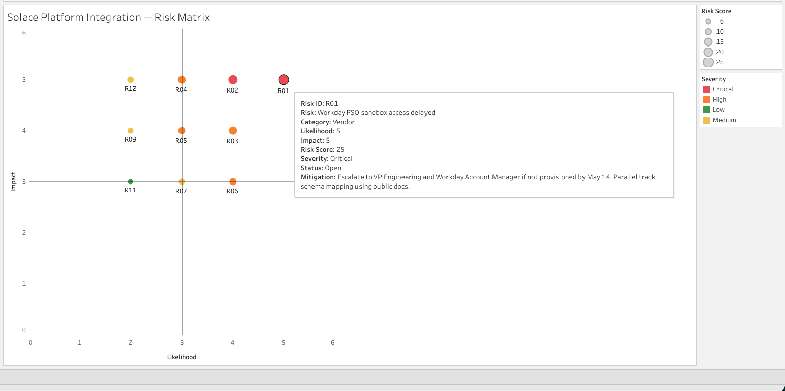
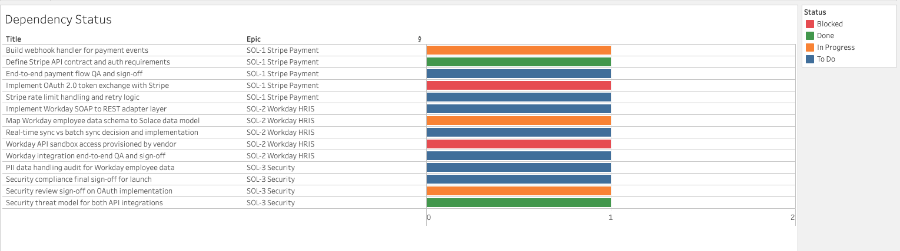
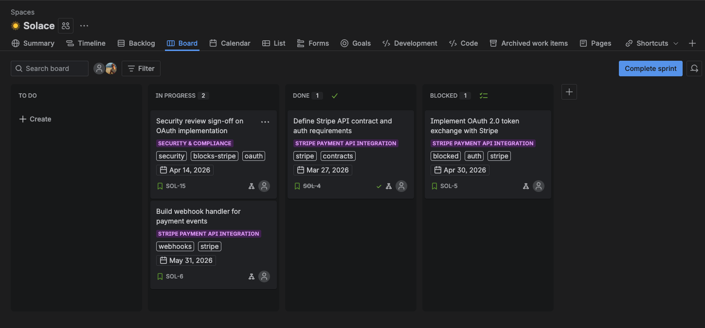
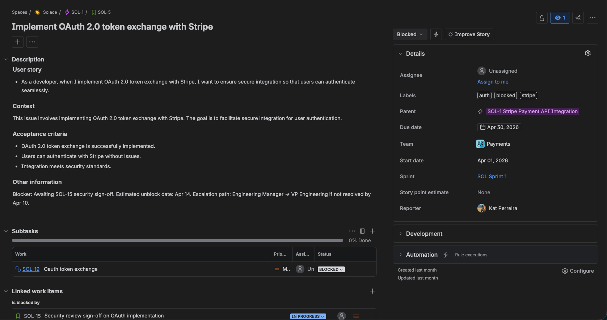
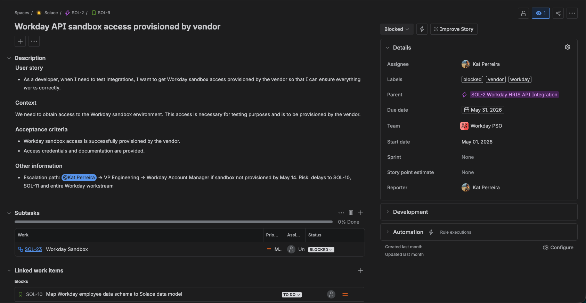

A multi-workstream API integration program spanning Stripe payments, Workday HRIS, and Security & Compliance across five teams. This program is a study in multi-workstream dependency management.
Project overview
Solace is a B2B SaaS HR tech platform serving mid-market companies. They needed to connect two critical third-party systems to its core platform: Stripe to handle payroll disbursements and benefits billing, and Workday to sync employee records in real time. Without these integrations, HR administrators were managing data manually across disconnected systems, a process prone to errors and delays at scale. As TPM, I owned cross-team coordination across Platform, Payments, Integrations, Security, and a third-party vendor (Workday PSO). This project highlights how I managed a dependency chain where two root blockers, an external vendor timeline and an internal security review, created downstream risk across five tickets simultaneously. The program runs April through August 2026 with a hard compliance-gated launch deadline.
Program structure


Risk register


Dependency status

Key artifacts
Key artifacts include the Jira board, the SOL-5 ticket detail, and the SOL-9 ticket detail.



TPM decisions
Decision 1 — Structure Security as a cross-cutting epic rather than embedding security tasks in each workstream
The decision: Rather than attaching security review tasks to the Stripe and Workday epics respectively, Security & Compliance was established as its own epic (SOL-3) running concurrently across both workstreams.
Why it mattered: When security work lives inside a feature epic it often gets deprioritized when that epic falls behind. Giving Security its own epic with its own DRI and its own timeline made it impossible to skip or defer without a visible, intentional decision. It also meant SOL-31 and SOL-32 could block downstream work explicitly.
The tradeoff: A separate Security epic adds coordination overhead. The Security team now needs to be pulled into planning for two workstreams instead of one. Worth the cost for this big of an integration but may not be worth the effort for a smaller integration.
Decision 2 — Keep SOL-10 In Progress rather than marking it Blocked when SOL-9 was blocked
The decision: SOL-9 (Workday sandbox provisioning) is blocked by the external vendor. SOL-10 (schema mapping) depends on SOL-9 but was kept In Progress rather than cascading to Blocked status.
Why it mattered: The Integrations team could make meaningful progress on schema mapping using Workday's public API documentation; developers estimated that approximately 60% of the mapping work could be completed before sandbox access was strictly required. Marking SOL-10 Blocked would have been technically accurate but practically wrong — it would have signaled that Eng should stop work. Once all the work that can be completed before the block is completed, the ticket will move to the blocked status.
The tradeoff: This creates a status inconsistency that can confuse stakeholders reading the board. The mitigation is clear documentation in the SOL-10 description noting how much work can proceed without the blocker and what the trigger is for the status to change.
Decision 3 — Write escalation paths directly into blocked ticket descriptions
The decision: Every blocked ticket (SOL-5, SOL-9) has a named escalation path in the Other Information field: who to escalate to, by when, and what the trigger is.
Why it mattered: Escalation paths are usually tribal knowledge. Writing it into the ticket means the path to unblocking is visible to anyone on the team, not just the TPM. It also creates accountability — a named escalation date is harder to let slip than a vague "we'll escalate if needed".
The tradeoff: Escalation paths go stale. If the VP Engineering changes or the vendor contact changes, the ticket description needs to be updated. A weekly hygiene pass on blocked tickets is the mitigation.
Decision 4 — Flag the pre-work Discovery epic as a recommendation rather than implementing it
The decision: Rather than creating a fourth epic mid-program, the pre-work Discovery epic was proposed as a recommendation — documented in the retro and case study rather than built into the Jira structure.
Why it mattered: Adding a new epic mid-program without stakeholder alignment creates scope confusion. The right time to propose a Discovery epic was during program planning, not after work had started.
The tradeoff: This means the parallel tracking happening on SOL-10 is informal rather than structured. In a real program I'd formalize it — giving informal parallel work a ticket and an owner makes it trackable and gives the team credit for the work.
TPM retrospective
What went well
Dependency chain mapped before sprint start. By structuring the Jira project with explicit blocker links before Sprint 1 began, the cascade from two root blockers to five downstream tickets was visible from day one. Stakeholders could see the risk without needing a status meeting to explain it.
Security treated as a first-class workstream. Bringing Security in as its own epic (SOL-3) rather than attaching security tasks to individual stories meant the team couldn't accidentally start OAuth implementation without a review in place. The cross-cutting structure enforced the right sequencing.
Escalation paths documented at ticket level. Writing escalation paths directly into blocked ticket descriptions (SOL-5, SOL-9) meant the path to unblocking was never ambiguous. Anyone picking up the ticket mid-sprint knew exactly who to call and by when.
Parallel progress on blocked workstream. SOL-10 (schema mapping) remained In Progress during the SOL-9 vendor block by using Workday's public API documentation. Keeping the Integrations team productive during a blocker period rather than waiting is a deliberate TPM choice that compressed the critical path.
What I'd do differently
Propose a Discovery epic at program kickoff. The Workday vendor blocker (SOL-9) was predictable — vendor sandbox provisioning always takes longer than expected. A pre-work Discovery epic pulling forward schema mapping, adapter interface design, and environment configuration scripts would have given the Integrations team structured work to absorb during the wait rather than relying on informal parallel tracking.
Tie sandbox provisioning to contract terms. SOL-9 being blocked by Workday PSO with no contractual deadline is a program risk that should have been caught during vendor onboarding. In future programs I'd ensure sandbox access SLAs are written into the vendor statement of work before kickoff.
Add story point estimates earlier. The current backlog has no story point estimates, which means sprint velocity is unmeasurable and burndown charts are flat. Estimates are imperfect but they force sizing conversations that surface complexity early — particularly useful for the SOAP → REST adapter work in SOL-22 which is likely larger than it appears.
Earlier Legal engagement on PII. SOL-32 (PII audit) was scheduled to begin May 1, but Legal's involvement in data processing agreements is often the longest tail in compliance work. Starting that conversation in April alongside the security threat model would have reduced the risk of SOL-32 blocking SOL-23 later in the program.
What comes next
Sprint milestone planning through launch. The program needs five formal milestones tied to sprint boundaries — Security green light (end of Sprint 3), Stripe integration complete (end of Sprint 5), Workday sandbox live (end of Sprint 4), Workday integration complete (end of Sprint 8), and Launch ready (end of Sprint 10).
Launch readiness checklist. A launch readiness checklist covering security sign-offs, QA completion, runbook documentation, rollback plan, and monitoring setup should be drafted by Sprint 7 and tracked as a living document.
Post-launch monitoring plan. Both integrations need observability coverage from day one — Stripe webhook failure rates, payment retry counts, Workday sync lag, and PII access logging.